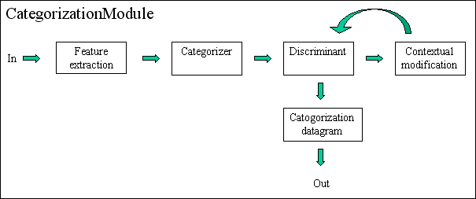

One initial categorization configuration datagram, Cac0Datagram.
Subsequently, one categorization datagram, Cad0Datagram, for each ping.
Parameters
Active:
If the module is not active, then all datagrams pass unaltered through it.
Category count:
Number of categories per pixel to put in the categorization datagrams.
Allowed values: Category count ≥ 1
Active features:
Which features to use. Only enabled features can be set to active.
Active categories:
Which categories to use. Only enabled categories can be set to active.
Categorizer:
Type of classifier.
Allowed values: { Gauss, Nearest neighbor, Combined }
Discriminant:
Type of discriminant function.
Allowed values: { Aposteriori, Cost }
Contextual correction:
Type of contextual correction iteration.
Allowed values: { None, ICM }
Contextual iterations:
Number of contextual correction iterations.
Allowed values: Contextual iterations ≥ 0
Use min Sv:
Enable Sv threshold.
Min Sv:
Only assign category for samples above a threshold at 38 kHz.
Details
The data flow through the categorization module is depicted in the following figure:

References
Korneliussen, R. J., and Ona, E. 2002. An operational system for processing and
visualizing multi-frequency acoustic data. – ICES Journal of Marine Science, 159:
293–313.
Korneliussen, R. J., and Ona, E. 2003. Synthetic echograms generated from the relative
frequency response. – ICES Journal of Marine Science, 60: 636–640.
Korneliussen, R. J., Heggelund, Y., Eliassen, I. K., and Johansen, G. O. 2009. Acoustic species identification of schooling fish. – ICES Journal of
Marine Science, 66: 1111–1118.
Pedersen, G., and Korneliussen, R. J. 2009. The relative frequency response derived from individually separated targets of northeast Arctic cod
(Gadus morhua), saithe (Pollachius virens), and Norway pout (Trisopterus esmarkii). – ICES Journal of Marine Science, 66: 1149–1154.
Korneliussen, R. J. 2010. The acoustic identification of Atlantic mackerel. – ICES Journal of Marine Science, 67: 1749–1758.